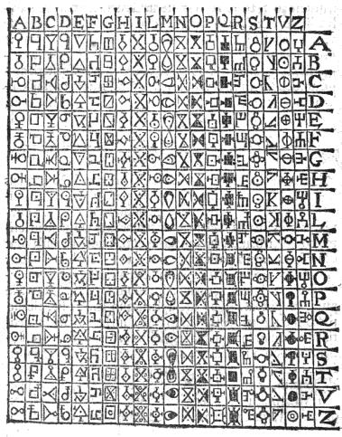

置換表（鍵）を作る
原典（1563年）の表は A B C D E F G H I L M N O P Q R S T V Z の20文字で、20×20＝400マスです。26×26 はすべての英字を使える拡張版です。
同じシードを入れると同じ表を作り直せます（擬似乱数で作るので、表の推測しにくさはシードの推測しにくさで決まります）。空欄にすると暗号用の乱数（crypto.getRandomValues）で作ります。
表のマスに使わない3桁の数です（カンマか空白で区切る）。通信の合図などに取っておく使い方を想定しています。
表で引いてみる
置換表
暗号化
英字が奇数個のとき、最後の組を作るために足す文字です。表にある文字から選びます（既定: 26×26 は X、20×20 は Z）。
20×20 の表だけで使います。当時は I と J、U と V を同じ文字として扱っていたので置き換えます。K・X・Y は表にないので外します。英字以外（空白・記号・数字）は暗号化から外し、下に一覧で示します。
復号
通信シミュレーター
💡 使い方
平文（ふつうの文章）を入れてください。暗号文ではありません。
「送信＆受信」を押すと、いまの表で送る側の暗号化 → 数字の列の送信 → 受ける側の復号を通しで行います。冗字は表の既定（26×26 は X、20×20 は Z）、20×20 の表にない英字は置き換えます。
通信結果
1. 送る平文
2. 暗号化して送るデータ
3. 受け取って復号したデータ
ポルタの二文字式暗号
ポルタ（Giovanni Battista della Porta）は、1563年にナポリで刊行した暗号書『De Furtivis Literarum Notis』の第2巻第13章で、平文の2文字を記号1つに置き換える表を示しました。

本ツールでは、記号の代わりに各マスへ重複のない3桁の数を割り当てて暗号化・復号します。
⚠️ セキュリティの注意
本ツールは教育目的のツールです。次の点に注意してください。
- ポルタの二文字式暗号は古典暗号で、現代の安全性の基準を満たしません
- 重要な情報の暗号化には使わないでください
- 暗号化・復号・表の生成はブラウザーの中だけで行い、外部へは送信しません